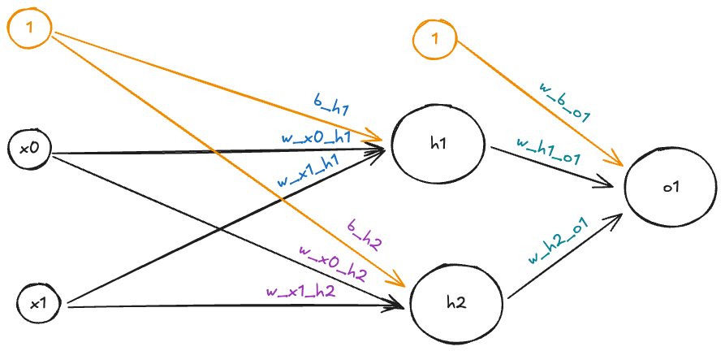
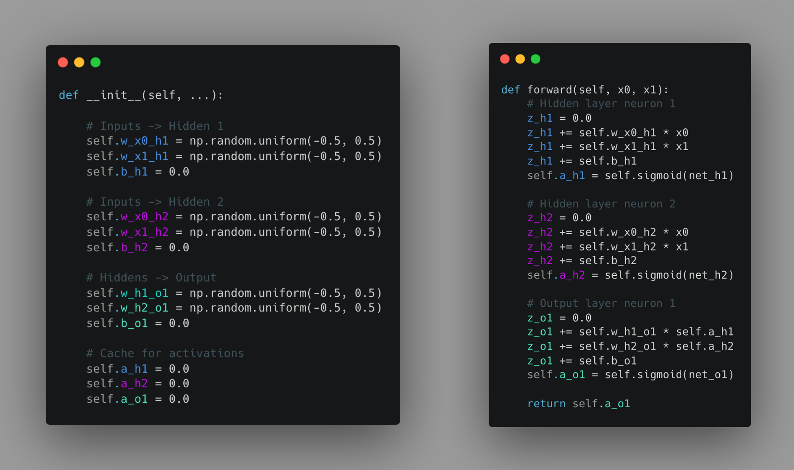

Vektorointi
Ennen kuin hyppäämme PyTochin käyttöön, varmistetaan vielä, että ymmärrämme, miksi vektorointi on tärkeää syväoppimisessa. Neuroverkkojen opetus vaatii valtavia määriä laskentatehoa. Täten ei ole aivan sama, kuinka data esitetään ja kuinka laskenta toteutetaan. Ennen kuin nyrpistät nenääsi, että miksi syväoppimiskurssilla on käytössä Numpy, niin mainittaakoon heti alkuun: PyTorchin Tensor on hyvinkin samankaltainen kuin Numpyn ndarray. Jotta osaamme myöhemmin arvostaa PyTorchin Tensoreita, kurkataan pintapuolisesti, kuinka neuroverkkoja voisi toteuttaa Numpyllä. Itse asiassa aivan ensimmäisenä unohdetaan jopa Numpy ja kurkataan Python-only -toteutusta. Tämä heti lyhyen osuuden jälkeen, jossa selitetään mikä on Tensor.
Tip
Termi vektorointi viittaa historiallisesti 70–90-lukujen vektoriprosessoreihin, jotka olivat sen ajan supertietokoneiden arkkitehtuurin perusta.
Mikä on Tensor?
Tensor on yleistetty käsite vektoreista, matriiseista ja yhä moniulotteisemmista rakenteista. Kun käytät koneoppimisviitekehyksiä kuten PyTorch tai TensorFlow, käytät tensoreita. Tensorilla on jokin aste (engl. rank), joka kuvaa sen ulottuvuuksien määrää. Elimerkiksi 2-ulotteisen värikuvan aste on 3, joten se on 3D-tensor muotoa (height, width, channels) (riippuen viitekehyksestä). Lähes kaikki, mitä käsittelet PyTorchissa, on N-ulotteisia Tensor-olioita: syötedata, mallin painot, biasit ja välitulokset. Vektoroinnin yksi idea on se, että data käsittellään n_samples kerrallaan, jolloin data on muotoa (n_samples, *data_dims).

Kuva 1: Eri mallisia tensoreita. Skaalarilla ei ole ulottuvuuksia, vektorilla on yksi, matriisilla kaksi ja korkeamman asteen tensoreilla kolme tai enemmän ulottuvuuksia.
Alla yleisiä Tensoreista muodostettuja datasettejä jaoteltuna sen mukaan, mitä reaalimaailman dataa se kuvastaa. Luettelo on pohjimmiltaan kirjasta Deep Learning with Python, Third Edition 1:
- Vektori:
- muotoa:
(samples, features) - esimerkiksi 5 tietoa 100 ihmisestä:
(100, 5) - tyypillinen tabulaarimuotoinen data, jossa kukin rivi on näyte ja kukin sarake ominaisuus.
- muotoa:
- Aikasarja tai muu sekvenssi:
- muotoa
(samples, timesteps, features), tai - muotoa
(samples, sequence_length, features) - kukin näyte on sekvenssi, jossa on useita aikapisteitä ja jokaisessa aikapisteessä useita ominaisuuksia.
- muotoa
- Kuvat:
- muotoa
(samples, c, h, w)(PyTorch) tai, - muotoa
(samples, h, w, c)(esim. TensorFlow, Matplotlib, OpenCV). - kukin näyte on kuva, jossa on korkeus, leveys ja värikanavat (esim. RGB).
- muotoa
- Videot:
- muotoa:
(samples, frames, c, h, w)(PyTorch), tai - muotoa:
(samples, frames, h, w, c)(esim. TensorFlow). - esim. 60 sekunnin klippiä Full HD -elokuvasta (24p):
(60, 24, 3, 1080, 1920)
- muotoa:
Neuroverkon painot yksittäisessä kerroksessa, W, ovat Rank-2 Tensor muotoa (output_features, input_features), ja biasit, b, ovat Rank-1 Tensor muotoa (output_features). Nämäkin ovat käytännön forward-passissa jaettu eriin (engl. batches), jolloin painot ja biasit laajennetaan muotoon (batch_size, output_features, input_features) ja (batch_size, output_features).
NN ilman vektorointia
Verkon rakenne
Käytämme tämän luvun esimerkkinä verkkoa, joka tunnetaan nimellä NumpyNNwithBCE. Löydät sen tiedostosta 200_numpy_nn.ipynb. Verkko on juuri sen verran pelkkää Perceptronia monimutkaisempi, että se kykenee yhden piilotetun kerroksen ansiosta ratkaisemaan XOR-ongelman. Selvyyden vuoksi verkon arkkitehtuuri on esitetty alla olevassa kuvassa

Kuva 2: Kuvassa on 2-2-1 arkkitehtuuria edustava verkko, NumpyNNwithBCE, jota käytämme tämän luvun aikana esimerkkinä. Toteutuksesta löytyy Jupyter Notebook, jossa verkko on toteuttuna NumPy:lla.
Toteutus ilman vektorointia
Tutustumme ensin siihen, miltä malli näyttäisi, jos emme käyttäisi Numpy-kirjaston mahdollistamaa vektori- tai matriisilaskentaa. Tätä mallia ei löydy mistään kokonaisuuteena, mutta saat toki koodata sen itse jos haluat. Olkoon sen nimi: PythonNN. Tutustu alla olevassa kuvassa esitettyyn koodiin. Koodi on värikoodattu siten, että värit täsmäävät Kuvan 1 painojen väreihin.

Kuva 3: Kuvassa on PythonNN-verkon __init__- ja forward-metodit ilman vektorointia. Koodissa on paljon rautakoodattua toistoa. Huomaa, että tätä mallia ei ole meidän kurssillamme toteutettuna missään Notebookissa. Kaikki sinun ajamasi koodi sisältää jossain määrin vektoroidun toteutuksen. Huomaa, että NumPyllä initialisoidut parametrit ovat liukulukuja, jotka voisi yhtä hyvin generoida Pythonin random-kirjastolla.
Esimerkki on tarkoituksella jätetty täysin rautakoodatuksi. Ongelmaa voisi koodin ylläpidettävyyden ja uudelleenkäytettävyyden kannalta parantaa käyttämällä silmukoita ja listoja. Koodista tulisi rakenteeltaan dynaamisempaa, mutta se suoritettaisiin yhä yksi kerta per syöte, yksi paino kerrallaan - eli siis sekventiaalisesti.
Silmukka toisen perään
Jos käytössä ei ole minkään sortin vektorointia, koodia loopataan näin:
EPOCHS = 10_000
dataset = [(1, 0), (0, 1), (1, 1), (0, 0)] # XOR dataset
model = PythonNN()
for epoch in range(EPOCHS):
for x1, x2 in dataset:
model.forward(x1, x2)
model.backward(x1, x2)
model.update_weights(lr=0.1)
Numpy to the rescue
Käytänteet
Lineaarialgebran teoriassa käytetään yleensä sarakevektoreita \((n, 1)\), jolloin operaatio on \(y = Wx + b\). Ohjelmistokehykset (PyTorch, NumPy) käsittelevät dataa kuitenkin riveinä (yleensä muodossa \((batch\_size, n)\)).
Tästä syystä koodissa operaatio toteutetaan muodossa: \(y = xW^\intercal + b\)
Tämä transpoosi sallii painomatriisin \(W\) kertomisen tehokkaasti kokonaisella databatchilla, jossa kukin näyte on omana rivinään.
Huomaa, että Numpy-vektorointi tiivistää saman koodin hyvinkin lyhyeksi. Jos jätetään pari yksityiskohtaa pois, forward()-metodin koodi näyttää tältä:
def forward(self, x):
# Layer 1 (hidden layer)
Z1 = self.A0.dot(self.W1.T) + self.b1
self.A1 = self.sigmoid(Z1)
# Layer 2 (output layer)
Z2 = self.A1.dot(self.W2.T) + self.b2
self.A2 = self.sigmoid(Z2)
return self.A2
Numpy ei kuitenkaan pelkästään typistä syntaksia lyhyemmäksi. Se myös suorittaa laskennan paljon tehokkaammin. Tämä johtuu siitä, että Numpy on ohjelmoitu C-kielellä, mikä mahdollistaa C array-rakenteen käytön epätehokkaan Python listan sijasta 2. Lisäksi Numpy hyödyntää SIMD (Single Instruction, Multiple Data) -laskentaa, joka mahdollistaa useiden arvojen käsittelyn yhdellä käskyllä 3. Eli siis yksittäinen käsky (single instruction) voidaan suorittaa yhtäaikaisesti rinnakkaisesti usealle datalle (multiple data).
Myöhemmin kurssilla käytettävät TensorFlow ja PyTorch vievät tämän vielä askeleen pidemmälle hyödyntämällä GPU:ita, jotka on suunniteltu erityisesti rinnakkaislaskentaan. Esimerkiksi CUDA on SIMT (Single Instruction, Multiple Threads) -arkkitehtuuri, joka mahdollistaa tuhansien säikeiden samanaikaisen suorittamisen. Jos käsitteet SISD, MDSI, SIMD ja MIMD eivät ole entuudestaan tuttuja, kannattaa pikaisesti tutustus Flynnin luokittelu-Wiki-artikkeliin. SIMT on lisäys tähän luokitteluun.
Neuroverkkojen kanssa säästö on suuri, koska verkon koulutuksessa tehdään useita kertoja \(W \cdot X + b\) -tyyppisiä laskuja. Nämä ovat juuri niitä laskuja, jotka hyötyvät vektoroinnista ja rinnakkaislaskennasta. Pelkässä forward()-metodissa on yksi tällainen operaatio per kerros. Ilman SIMD-laskentaa tämä pistetulo suoritettaisiin yksi parametri kerrallaan. Kuinka monta kertaa siis? Tässä meidän 2-2-1 verkossamme koulutettavia parametreja on yhteensä 9 (6 painoa ja 3 biasia). Muistellaan vertailun vuoksi meidän aiempaa MNIST-malliamme, jossa oli 784 syötettä, kahdessa piilotetussa kerroksessa 256 ja 128 piilotettua solmua ja 10 ulostuloa. Yhteensä parametreja on:
| Layer item | Shape | Count |
|---|---|---|
| fc1.weight | (256, 784) | 200,704 |
| fc1.bias | (256,) | 256 |
| fc2.weight | (128, 256) | 32,768 |
| fc2.bias | (128,) | 128 |
| fc3.weight | (10, 128) | 1,280 |
| fc3.bias | (10,) | 10 |
| Total | 235,146 |
Lyhyet opit
Älä koskaan sekoita for-silmukoita ja Python-natiiveja ei-vektoroituja funktioita hajautetun tai vektoroidun koodin kanssa sekaisin. Pythonin for-silmukkaa voi käyttää ajurina (engl. driver), kuten vaikkapa epookkien tai erien (engl. batch) läpikäymiseen, mutta älä koskaan käytä sitä datan läpikäymiseen. Käytä sen sijaan vektoroituja funktioita ja operaatioita.
Seuraavassa osassa tätä kurssia opit PyTorchin ja siihen liittyvien aputyökalujen kuten Datasetin ja Dataloaderin käytön. Nämä ovat tehokkaita työkaluja: käytä niitä hyväksesi.
Tehtävät
Tehtävä: Tutustu vektorointiin
Katso Vectorization in PYTHON by Prof. Andrew NG -video. Videolla AI-kontekstissa hyvinkin tunnettu tekijä selittää vektoroinnin perusteet ja havainnollistaa, miten vektorointi nopeuttaa laskentaa. Kaikki 8 minuutissa.
Jos aihe jäi yhtään epäselväksi, katso myös toinen 8-minuuttinen video samalta tekijältä: Explanation For Vectorized Implementation (C1W3L05).
Tehtävä: NumPy Neural Network (NumpyNNwithBCE)
Avaa 200_numpy_nn.py-tiedosto ja tutustu NumpyNNwithBCE-malliin. Kyseessä on neuroverkko, joka on toteutettu NumPy-kirjastolla (eli ilman PyTorchia). Aja koodi ja tutki mitä tapahtuu. Varmista, että ymmärrät, kuinka mikäkin rivi koodia liittyy tähän mennessä kurssilla opittuun.
P.S. Voit jättää backward()-metodin pienemmälle huomiolle. Tutustumme myöhemmällä luennolla vastavirta-algoritmiin (engl. backpropagation), joka on backward()-metodin ydin.